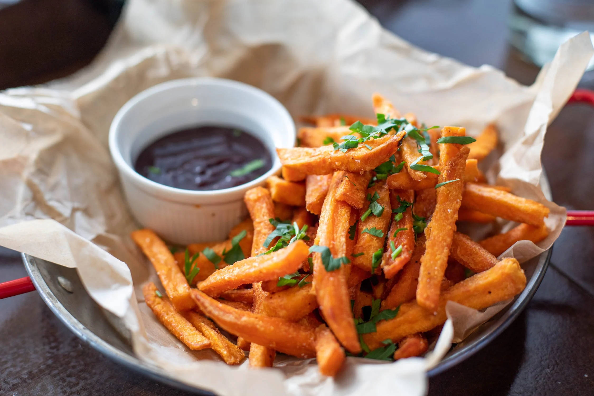

A Burger Joint was founded in the fall of 2022. We are a group of friends that decided to open up a restuarant full of our favorite greasy treats we shared with each other in college during late homework nights or a wild night out. All of our food is hand made and baked every morning. We use the top grills in the country to grill our steaks, burgers, and more. We use fresh tomatoes for our ketchup too.

123 MAIN STREET BALTIMORE, MD 21212 444-444-4444 info@info.com